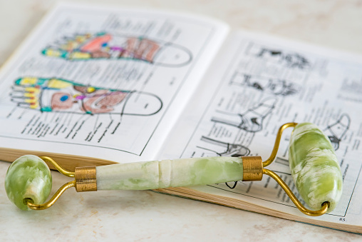

myletispa - עכשיו הזמן שלך
סוגי טיפולים
רפלקסולוגיה
רפלקסולוגיה היא שיטת אבחון וטיפול ברפואה האלטרנטיבית.
שיטה זו מתבססת על הנחה פסאדו-מדעית, לפיה נקודות ואזורים בכף הרגל מייצגים ״מפה״ של כל איברי ומערכות הגוף.
באמצעות התבוננות ומגע בכף הרגל, ניתן לאבחן ולטפל בליקויים במערכות הגוף השונות.
כגון עצירויות, בעיות שינה, כאבי ראש ועוד...

אבנים חמות
עיסוי באבנים חמות מגיע מהמסורת האינדיאנית, והוא כולל שימוש באבני בזלת המשמש לשחרור של רקמות כואבות ושרירים תפוסים.החום חודר אל השרירים, מחמם ומרכך אותם, משחרר ומרפה.
עוזר במצבים של כאבי שרירים, כאבי גב, מתח, דיכאון ועוד.

עיסוי לנשים בהריון
הריון היא תקופה חשובה בחיי אישה ומתבטא בשינויים פיזיים ונפשיים.עיסוי לנשים בהריון מקנה יתרונות רבים: מסייע בהקלה על כאבי גב, שרירים, רגליים וראש.
כל הזכויות שמורות
לדבורה גמ זו לטובה
0525282143
deborahgamzu@gmail.com